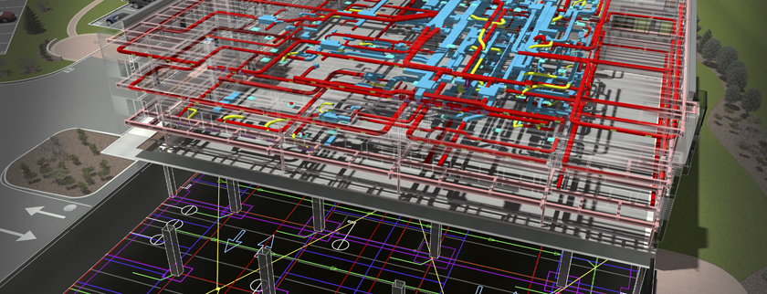

Installatietechniek is een breed vakgebied. Behalve het aanleggen van verwarming-
en luchtbehandelingsystemen in grote kantoorgebouwen horen daar ook waterleidingen en gasleidingen bij.
Dus van badkamer tot riolering bij je thuis, of van verwarmingsketel tot afvalwaterzuivering in een fabriek.
De eisen op het gebied van klimaatbeheersing worden steeds hoger en dus groeit ook de behoefte aan vakmensen
in de installatietechniek.